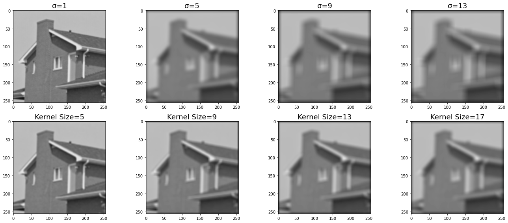
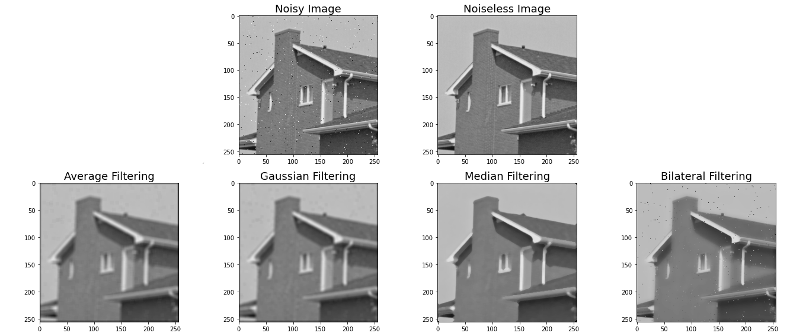
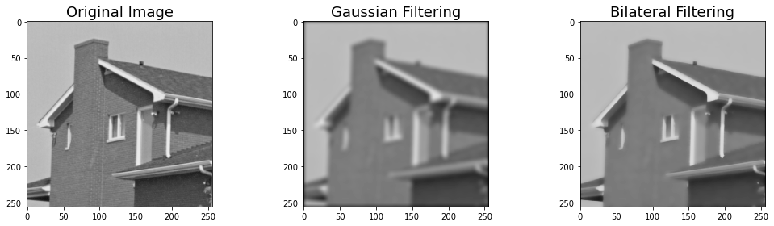

I implemented and compared average filtering, Gaussian filtering, median filtering, and bilateral filtering.

Gaussian filter comparing changing σ versus kernel size.

Comparing noise filtering across average, Gaussian, median, and bilateral filtering. The median filter performed the best with a relative absolute difference of 0.0333 compared to the bilateral filter at 0.0452, the Gaussian filter at 0.0600, and the average filter at 0.0653. If you look closely at the averaging filtering and the Gaussian filtering, there are some blurred dark specks still in the sky. This is because they average or blur the original pixel values with the noise. These specks are removed in the median filtering because it takes on the median value within the kernel size, which is likely from the original image, instead of calculating a new pixel value. This makes it the best at removing the noise. The bilateral filter still contains harsh specks from the noisy image because it does not blur nearby pixels with very different intensities to preserve detail.

The Gaussian filter is a low pass filter, meaning it preserves lower frequencies like solid colors and blurrier parts of the image and attenuates higher frequencies like edges and stripes.
An edge with white pixels on one side and black pixels on the other side will blur to a gray, and we'll lose the sharp edge in the image.
We can improve the Gaussian filter by using the bilateral filter, which is useful to blur an image while preserving edges. We want to blur together nearby pixels, but we don't want to blur together nearby pixels with very different intensities.